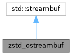

A streambuf subclass which wraps the C-style ZSTD bits to create a compressed stream.
More...
#include <zstd_compress.hpp>


Public Member Functions | |
| void | finalize () |
| Flush all remaining buffers and wait for ZSTD to say its finished. | |
Lifecycle Management | |
| zstd_ostreambuf (const zstd_ostreambuf &)=delete | |
| Disallow copying and moving. | |
| zstd_ostreambuf & | operator= (const zstd_ostreambuf &)=delete |
| Disallow copying and moving. | |
| zstd_ostreambuf (std::streambuf *dest, int level=ZSTD_CLEVEL_DEFAULT) | |
| Constructor which requires a destination stream. | |
| ~zstd_ostreambuf () override | |
| Destructor just needs to free() the Zstd memory bits. | |
Protected Member Functions | |
| int | overflow (int ch) override |
| Flushes the buffer when full and inserts the incoming character if provided. | |
| int | sync () override |
| Overrides the sync method, which in this case is just flush_input(). | |
Private Member Functions | |
| int | flush_input () |
| Reads all pending input and asks Zstd to compress it to the CStream. | |
Static Private Member Functions | |
| static void | check (size_t code) |
| Wrapper for ZSTD_isError(), which checks an error code and throws the error name if found. | |
Private Attributes | |
| std::streambuf * | _dest |
The destination streambuf for compressed data from the ZSTD_CStream. | |
| ZSTD_CStream * | _zstd_cstream |
| The ZSTD compressor stream to send input to. | |
| std::vector< char > | _input_buffer |
| Basic input buffer to feed to ZSTD. | |
| std::vector< char > | _output_buffer |
| Basic output buffer for ZSTD. | |
| bool | _finalized = false |
| Internal flag for proper shutdown/destruction. | |
| ZSTD_EndDirective | _zstd_end_directive = ZSTD_e_continue |
Customizable end-directive to use for ZSTD_compressStream2 calls. | |
Detailed Description
A streambuf subclass which wraps the C-style ZSTD bits to create a compressed stream.
Constructor & Destructor Documentation
◆ zstd_ostreambuf()
|
inline |
Constructor which requires a destination stream.
This implementation uses the ZSTD_createCCtx and takes a few liberties.
First, it will attempt to use the number of threads as indicated by std::hardware_concurrency(). If 0 or negative is returned, it is set to 1. If greater than 16 is returned, it is clamped to 16.
Next, when compression level is over 19, long-distance matching is enabled. This drastically improves the compression ratio at the expensive of CPU-time (it's slower).
Finally, when compression level is over 19, it also switches to the ZSTD_e_flush end-directive. Normally, ZSTD waits for a full window of data before waking up its compressor threads. The flush directive forces compression immediately. This class uses an input buffer size of 16MB to help optimize compressor work. The whole reason for switching to flush is to help ZSTD engage more worker threads. Without this, compression was observed to get choked down to a single thread and process very slowly.
- Compliance
The data emitted by this class should be a fully compliant ZSTD file. Meaning, if written to disk, any other ZSTD compliant program can read it, including the zstd CLI.
- Warning
- Caller must issue
finalize()before destruction to ensure all buffers are flushed.
- Parameters
-
dest Any valid streambuf to write data to. level The desired compression level. It defaults to ZSTD_CLEVEL_DEFAULT. Any valid ZSTD level is permitted by this class. When level exceeds 19, long-distance matching will be enabled:ZSTD_c_enableLongDistanceMatching.
Member Function Documentation
◆ check()
Wrapper for ZSTD_isError(), which checks an error code and throws the error name if found.
- Parameters
-
code The code to check with ZSTD_getErrorName.
◆ finalize()
|
inline |
Flush all remaining buffers and wait for ZSTD to say its finished.
ZSTD needs all input flushed to it (obviously), but it also requires the caller to check ZSTD_e_end when in multi-threaded mode until it reports 0. There's some ZSTD frame bits (checksums maybe?) that isn't fully understood, but this cycling is mandatory before calling any destruction, implicit or otherwise.
- Warning
- Caller must issue
finalize()before destruction to ensure all buffers are flushed.
◆ flush_input()
|
inlineprivate |
Reads all pending input and asks Zstd to compress it to the CStream.
- Returns
- 0 on success, -1 if writing to the destination streambuf fails.
◆ overflow()
Flushes the buffer when full and inserts the incoming character if provided.
- Returns
- Integer indicating overflow/EOF status.
◆ sync()
|
inlineoverrideprotected |
Overrides the sync method, which in this case is just flush_input().
- Returns
- Integer indicating status.
The documentation for this class was generated from the following file:
- src/collatz/zstd_compress.hpp